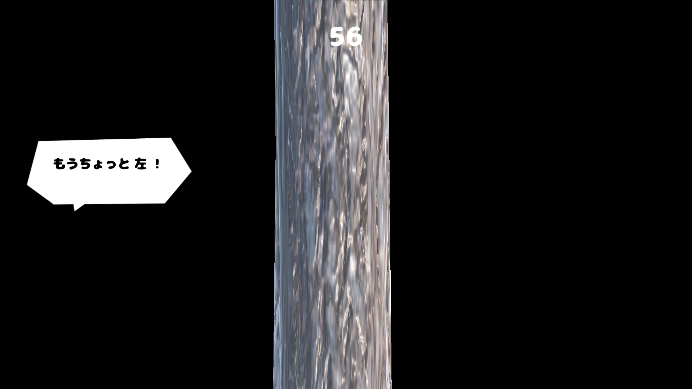

作品リスト
1. ゲーム作品
| 作品名 | 概要 |
|---|---|
| Taketori （チーム制作） |
かぐや姫の話をモチーフとした、3D アクションゲームです。 無数に広がる竹林で、竹を伐採しながらかぐや姫が入った竹を切ることを目指すゲームです。  |
| シャカシャカしゅーてぃんぐ （チーム制作） |
歯磨き粉と水で次々に来る患者の歯をきれいにしていくシューティングゲームです。 制限時間内により多くの患者の歯を磨くことが目標です。  |
| すいか割り | 画面に表示されるセリフを頼りにして、すいかの位置を特定し、正確にすいかを割ることを目指す、リアル志向のすいか割りゲームです。  |
2. アプリ作品
| 作品名 | 概要 |
|---|---|
| バブルタスク | 優先度が視覚的に表現され、消化を視覚的に楽しめるようなタスク管理アプリを制作しました。 |
| 表情可視化アプリ | iPhone のカメラ入力から取れる顔のパーツ情報を利用して、FacialActionCodingSystem（FACS）にもとづいて表情を分析し、アバターに出力します。 |